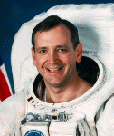

Lyndon B. Johnson Space Center
Houston, Texas 77058
|
National Aeronautics and Space Administration Lyndon B. Johnson Space Center Houston, Texas 77058 |
 |
Biographical Data |
||
Tom Akers (Colonel, USAF, Ret.)
NASA Astronaut (former)
PERSONAL DATA: Born May 20, 1951, in St. Louis, Missouri, but raised and educated in his hometown of Eminence, Missouri. Married to the former Kaye Lynn Parker of Eminence, Missouri. They have two grown children. Tom enjoys hunting, horseback riding, land surveying, farming and spending time with his family. His parents, Walter and Arlie Akers, are both deceased.
EDUCATION: Graduated from Eminence High School, Eminence, Missouri, in 1969; received Bachelor of Science degree and a Master of Science degree in Applied Mathematics from the University of Missouri-Rolla in 1973 and 1975, respectively.
SPECIAL HONORS: High School Valedictorian. Graduated Summa Cum Laude from University of Missouri-Rolla. Named a Distinguished Graduate of U.S. Air Force Officer Training School, Squadron Officers School and Test Pilot School. Recipient of the Department of Defense Superior Service Medal with two oak leaf clusters; Legion of Merit Award; Department of Defense Meritorious Service Medal; USAF Meritorious Service Medal; U.S. Air Force Commendation Medal; U.S. Air Force Achievement Medal; NASA Distinguished Service Medal; two NASA Exceptional Service Medals; four NASA Space Flight Medals. Awarded an honorary Doctorate of Engineering from the University of Missouri-Rolla in 1992. Awarded ten Outstanding Teacher Awards from University of Missouri-Rolla/Science and Technology (S&T) 2000 through 2010 and the Missouri Governor’s Teaching Award, 2004.
EXPERIENCE: Akers was a National Park Ranger at Alley Springs, Missouri, during the summer seasons from 1972 through 1976. After graduating from the University of Missouri-Rolla in 1975, he spent four years as the high school principal in his hometown of Eminence. Joining the Air Force in 1979, his first assignment after Officer Training School was to Eglin Air Force Base, Florida, as an air-to-air missile data analyst where he also taught night classes in Math and Physics for Troy State University. In 1982 he was selected to attend the Air Force Test Pilot School at Edwards Air Force Base, California. On completing one year of training as a flight test engineer, in 1983 he was reassigned to Eglin Air Force Base, where he worked on a variety of weapons development programs, flying F-4, F-15 and T-38 aircraft until he was selected for the astronaut program.
He has logged more than 2,500 hours flying time in 25 different types of aircraft.
NASA EXPERIENCE: Akers was selected for the astronaut program in 1987. Positions held include: Astronaut Office focal point for space shuttle software development; astronaut representative during shuttle software testing in the Shuttle Avionics Integration Laboratory (SAIL); supported launch activities at the Kennedy Space Center; astronaut representative for EVA activities (spacewalks); Deputy Director of Mission Operations; Acting Deputy Director of Flight Crew Operations and Assistant Director (Technical) of Johnson Space Center. Akers left the astronaut program and NASA in August of 1997 to return to the U.S. Air Force as the commander of the U.S. Air Force ROTC Detachment 442 at the University of Missouri-Rolla.
Akers retired from the Air Force in October of 1999, and accepted a position as an instructor in the Math Department at the University of Missouri-Rolla, now named Missouri University of Science and Technology (S&T). He retired from S&T in 2010.
SPACE FLIGHT EXPERIENCE: A veteran of four space flights (STS-41 in 1990, STS-49 in 1992, STS-61 in 1993 and STS-79 in 1996), Akers has accumulated more than 800 hours of space flight including over 29 hours of spacewalking experience.
On STS-41, October 6 to October 10, 1990, Akers was responsible for the mission’s primary payload, the Ulysses spacecraft. The STS-41 crew successfully deployed the interplanetary probe and started it on its four-year journey via Jupiter to investigate the polar regions of the Sun.
STS-49, May 7 to May 16, 1992, was the maiden flight of the space shuttle Endeavour. The STS-49 crew successfully completed four EVAs (spacewalks), three rendezvous and a variety of secondary objectives. Akers was one of a three-member EVA team who successfully captured and repaired the stranded INTELSAT (International Telecommunications Satellite). This was the first and only three-person EVA and the longest EVA (8.5 hours) in history at the time. Akers also performed a second EVA on this flight to evaluate space station Freedom construction techniques.
On STS-61, December 2 to December 13, 1993, Akers again served as an EVA crew member. During the 11-day mission, the crew captured the Hubble Space Telescope and restored it to full capacity through a record five spacewalks by four astronauts. Akers performed two of these bringing his total EVA time to 29 hours and 40 minutes.
STS-79, September 16 to September 26, 1996, was the fourth shuttle mission to rendezvous with the Russian space station Mir. Akers was the flight engineer and responsible for the transfer of more than 3.5 tons of supplies to and from Mir. This mission also marked the first exchange of U.S. astronauts on Mir, leaving John Blaha and returning Shannon Lucid home after her record six-month stay in space.
AUGUST 2013
This is the only version available from NASA. Updates must be sought direct from the above named individual.